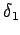

Inhalt Index DeskTop Bronstein

 Geometrie Sphärische Trigonometrie Haupteigenschaften sphärischer Dreiecke Grundformeln und Anwendungen
Geometrie Sphärische Trigonometrie Haupteigenschaften sphärischer Dreiecke Grundformeln und Anwendungen


Mit Hilfe der angegebenen Grundformeln können z.B. Entfernungen und Azimute bzw. Kurswinkel auf der Erde bestimmt werden.
| Beispiel A |
|
Es ist die kürzeste Entfernung zwischen Dresden und Alma Ata Lösung: Die geographischen Koordinaten und der Nordpol N liefern zwei auf Meridianen liegende Seiten und des Dreiecks P1P2N sowie den eingeschlossenen Winkel Für c =e folgt aus dem Kosinussatz (3.192a) |
| Beispiel B |
|
Es sind die Kurswinkel  und
Lösung: Die Berechnung der zwei Seiten sowie des eingeschlossenen Winkels im sphärischen Dreieck P1P2N mit den geographischen Koordinaten mit Hilfe des Kosinussatzes (3.192c) liefert , und wegen Somit ist und . |
Hinweis: Die Verwendung des Sinussatzes zur Berechnung von Seiten und Winkeln ist nur dann sinnvoll, wenn aus der Aufgabenstellung ersichtlich ist, ob diese spitz oder stumpf sind.